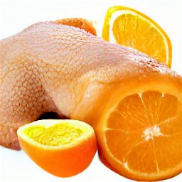

Chicken that is Orange

How did they do this?
Genetic technology has advanced so far in the last few decades that we, at
CRISPYR (not to be confused with CRISPR although there may be a cease and desist incoming)
have combined America's two favourite ingredients: Chickens and oranges. How did we do it?
We're not telling (tee-hee). Okay, fine. We defied the Almighty, in our pursuit of knowledge
akin to Dr. Frankenstein, by splicing the DNA of an egg and combining it with the DNA
of an orange. So, enjoy America; enjoy how we made God weep.
Ingredients
- Beach Boys discography on vinyl
- Passion (replaceable by lust)
- OJ Simpson (not to be confused by Orange Juice)
- Pig with lipstick
- Intel Core i5
- D.A.R.E T-shirt
- Panda Express Orange Chicken
Steps
- First, deconstruct the Panda Express Orange Chicken into its component parts.
- Install the Intel core i5 into the CPU socket.
- Start a hugely unsuccessful "War on Drugs."
- The pig with lipstick is just an expression so return the pig and keep the lipstick.
- Pass the California State Bar and become a defense attorney for OJ Simpson.
- Smash the vinyl (only pricks use vinyl).
- Reignite the passion you lost in your failing marriage. If unable, cry as you look at the 15 TB of Scar Jo PNGs.
- Have a good life!